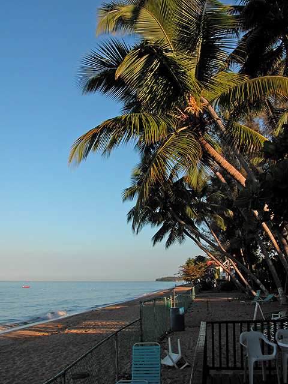

Well, another day has come and gone. Here's the beach in front of my hotel:

After class, I decided to drive south on Highway 2 from Aguadilla. When I was just outside of Mayaguez, I turned onto 102 and drove along the coast. These next two images are a great example of how photography is the art of subtraction. You'd be tempted to think that all of Puerto Rico looks like this:


The reality is that this section of Road 102 runs alongside a solid row of buildings that lie between the road and the ocean. These buildings are all surrounded by high fences (and in some cases topped by razor wire!). There are quite a few stray dogs roaming the road which is more-or-less deserted. Most of the restaurants are closed, and nobody is walking along the road. It really is kind of depressing to see how things really look right next to incredibly beautiful scenary.
Posted by John at March 10, 2004 09:14 AM | TrackBackHey John,
Thanks for all of the great pictures! Any chance that you could take a few of the depressing side of things, too?
Posted by: James Geurts at March 10, 2004 10:01 AMI'll see what I can do. I've got some ideas, but I really need to be walking around in those neighborhoods to get the shots that I want. I see a lot driving through them quickly, but I don't really have a chance to stop and make an image.
Posted by: John Lam at March 10, 2004 12:23 PMBeautiful photographs John. I think you might have missed your calling.
Posted by: Moi at March 11, 2004 03:40 AMreally pretty. i love it.
Posted by: jerry at May 6, 2004 04:58 AMwow.